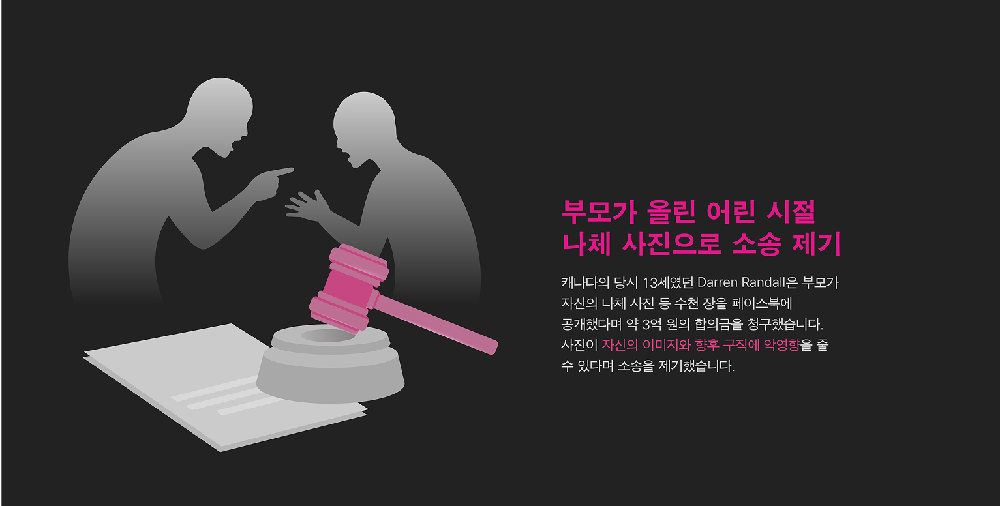
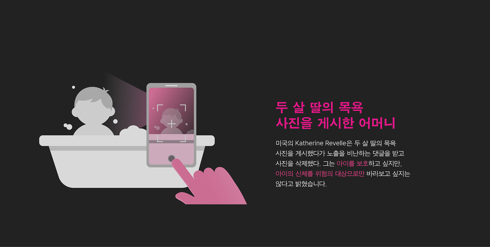
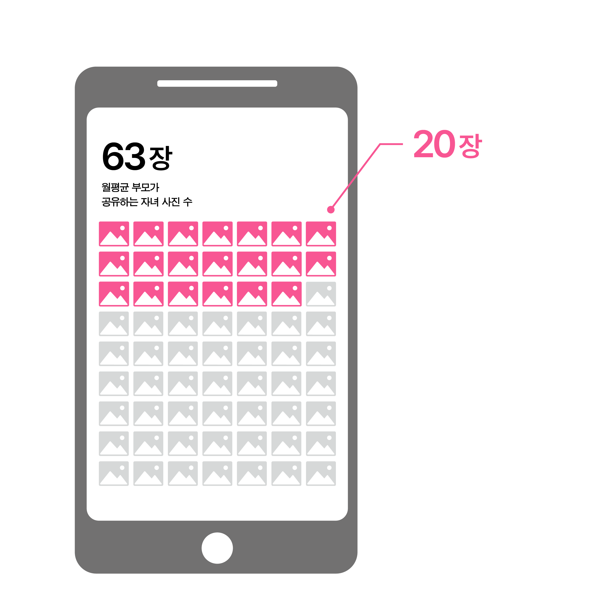

POSTED BY
아이의 사진은
어디까지 기록될까요?
모든 아이는
태어나는 순간부터 권리의 주체입니다.
성장하면서 자신의 생각을 이해하고 표현하고,
자신의 삶에 관한 결정에 참여하는 범위가 점차 넓어집니다.


셰어런팅으로 인해 아이가
범죄의 위험에 노출될 수 있습니다.
월평균 부모가 공유하는 자녀 이미지 수 : 63장.
전문가가 경고한 딥페이크 제작에 충분할 수 있는 이미지 수 : 20장

사진 한 장에는 아이에 대한
많은 정보가 담겨 있습니다.
일상의 사진에서도 이름, 학교, 거주지 등
다양한 개인정보가 쉽게 유추될 수 있습니다.
PHOTO ANALYSIS ●
한 장의 사진에서
드러나는 정보
좋아요 128개
moms_daily 오늘도 즐거운 등원길 ✿
사진 속 아이 얼굴에 마우스를 올려보세요.
한 장에서 시작한 사진은
수많은 문제로 이어질 수 있습니다.